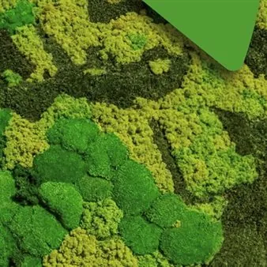

ven 20 nov · dalle 20:45
Ri/Circus : i miti che riciclano il mondo
Ri/Circus : i miti che riciclano il mondo Spettacolo di Teatro, Circo e Videoarte
 Indicazioni
Indicazioni
- Costi e prenotazioni
- Costo non indicato · Prenotazione non indicata
- Programma
- Programma da verificare. Apri la fonte ufficiale per orari e possibili aggiornamenti.
- In caso di maltempo
- Nessuna indicazione specifica pubblicata.
- Note
- Acquisito automaticamente dalla fonte.
L’EVENTO
Descrizione completa
Ri/Circus : i miti che riciclano il mondo Spettacolo di Teatro, Circo e Videoarte
Spettacolo empatico e coinvolgente, che riscrive in chiave contemporanea gli archetipi della cultura classica, sollecitando il pensiero divergente e promuovendo il valore etico della sostenibilità ambientale, con un puntuale riferimento all’esperienzialità della raccolta differenziata. Nuova produzione di Maravee Projects, propone un flusso drammaturgico che scorre dalla PAROLA ATTORIALE alle PERFORMANCE CIRCENSI, dilatandosi nei COSTUMI (concepiti come installazioni artistiche indossabili), negli OGGETTI DI SCENA, tutti realizzati con materiali di recupero, e nel VIDEO D’ARTE che funge da mutante fondale paesaggistico nel passaggio da scenari distopici a visioni utopiche.
Nell’intreccio fra Teatro, Circo e Video arte, lo spettacolo costruisce un ponte tra il lontano passato e il presente futuribile, ridando corpo e voce agli antichi miti che impersonificavano parti dell’ambiente e fenomeni naturali. Rinati nel nostro tempo, con la coscienza del loro antico passato, scoprono di essere stati oltraggiati e abusati dall’umanità, con la quale entrano in conflitto. Il loro non è uno sterile lamento, ma un’incisiva presa di coscienza temporale, che li vede co-protagonisti di una proposta in atto: la RI-nascita fondata sul RI-ciclo concepito come un ciclo spiralico e continuo, che è anche un RI/CIRCO della vita quotidiana. Drammaturgia e Regia di Sabrina Zannier
Costumi e oggetti di scena di Belinda De Vito
Scenografia Video di Luca Armocida e Cabiria Lizzi PERSONAGGI
Gea – Serena Di Blasio
Centauro – Fabio Cassisi
Oceano – Pietro Macdonald
Demetra – Teresa Bisoni
Naiade – Martina Fatighenti
Ninfa – Helena Cleofe Finati CIRCENSI
Noto – Alessandro Zanutto
Zefiro – Stefano Papia
Etere – Samuele Vedovato Lo spettacolo è una diatriba tra Gea (personificazione di Madre Terra) e Centauro (simbolo del conflitto tra istinto animale e razionalità, qui personificazione dell’Umanità contemporanea). Centauro è arrogante e sarcastico, ma solo, a rappresentare l’umanità, mentre Gea, la Terra svilita e abusata, può contare su quattro alleati: Oceano, Demetra, Naiade e Ninfa (personificazioni del mare, della terra coltivata, di sorgenti fiumi laghi e di montagne grotte valli), uniti ai venti mitologici Noto e Zefiro e ad Etere, divinità primordiale della luce celeste, incarnati dai circensi.
Tra ansia, alterigia, rabbia, speranza, meraviglia, sarcasmo, entusiasmo, il conflitto si tende tra male e bene, caos e ri/nascita. Un binomio incarnato negli oggetti di scena che compaiono con ognuno dei quattro personaggi legati a Gea: i grandi contenitori della raccolta differenziata, degli scarti da Ri/ciclare o Ri/utilizzare.Riusciranno i miti a redimere Centauro elevandolo a motore del cambiamento?
IL PROGRAMMA
Programma e orari
Appuntamenti raccolti dalle fonti elencate. Dove manca un orario, non è ancora disponibile in questa scheda.
Programma pubblicato
- Dal 2026-11-20 al 2026-11-20
INFORMAZIONI UTILI
Prima di partire
- Controllare la fonte prima di partire.
ORGANIZZAZIONE